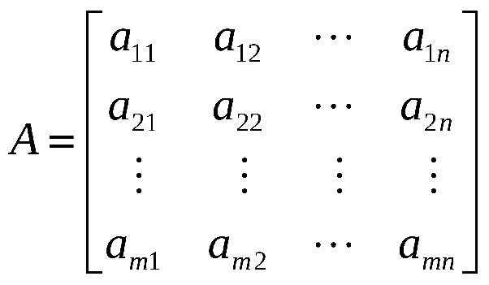
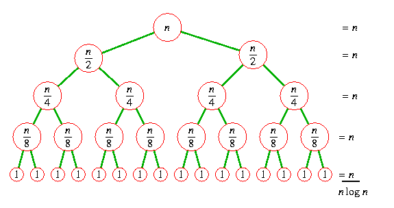
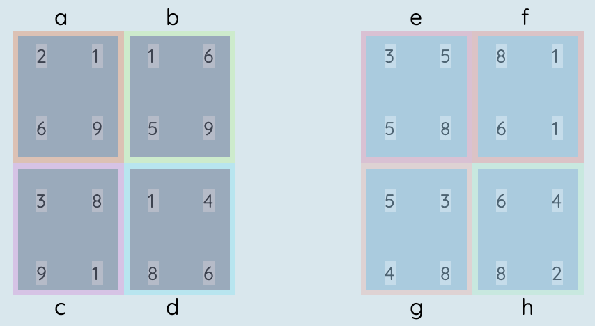
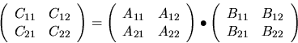
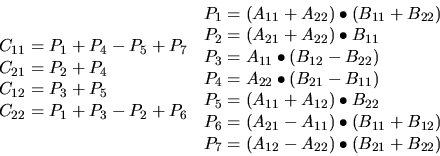

Multiplicación de Matrices de Strassen
Optimizaciones galácticas.
Escuela Superior de Cómputo del Instituto Politécnico Nacional
Súper Equipo 🦸🏻♂️
- Alan Gerardo Vallejo García.
- Ulises Jesús Santos Méndez.
- Humberto Alejandro Ortega Alcocer.
Análisis de Algoritmos | 3CM14
M. Edgardo Adrián Franco Martínez.👉
Índice
- Matrices, un vistazo histórico.
- Multiplicar matrices (fuerza bruta).
- Divide y Vencerás.
- Optimización de Strassen.
- Bibliografía
👉
Matrices, un vistazo histórico.
👇
¿De dónde vienen las matrices?
Las matrices tienen muchos años de existir y ser analizadas, los cuadros mágicos y cuadros latinos datan (según la literatura china) del 650 a.C.
Algunas personalidades que han contribuído al estudio de matrices:
Jiu Zhang Suan Shu, Seki Kōwa, Gottfried Leibniz, Cramer, Gauss, Willhelm Jordan, Hamilton, Von Neumann, Frobenius y Heisenberg.
Operaciones con matrices
Las matrices cuentan con todas las operaciones definidas por el álgebra matricial, es decir, podemos realizar:
- Suma.
- Diferencia.
- Producto, (la operación crucial de este algoritmo).
- Cociente.
- etcétera...
👉
Multiplicar Matrices
Algoritmo directo o por fuerza bruta.
👇
Procedimiento de la operación.
procedimiento multiplicar_matrices(A,B)
entrada A,B, matrices de n*n
salida C, matriz de n*n
inicio
para i = 0, hasta n-1, incrementando en 1
para j = 0, hasta n-1, incrementando en 1
C[i,j] = 0; // inicializamos matriz resultante en 0.
fin para
fin para
para i = 0, hasta n-1, incrementando en 1
para j = 0, hasta n-1, incrementando en 1
para k = 0, hasta n-1, incrementando en 1
C[i,j] = C[i,j] + A[i,k] * B[k,j] // producto matricial.
fin para
fin para
fin para
fin multiplicar_matrices
Aquí, será fácil obtener el orden de la complejidad temporal de nuestro algoritmo ya que tenemos tres ciclos anidados de orden lineal. Lo cual resulta en:
\[O(n*n*n) = O(n^3)\]
para i = 0, hasta n-1, incrementando en 1
para j = 0, hasta n-1, incrementando en 1
para k = 0, hasta n-1, incrementando en 1
C[i,j] = C[i,j] + A[i,k] * B[k,j] // producto matricial.
fin para
fin para
fin para
function multiplicar_matrices(a, b) {
let numFilasA = a.length, numColsA = a[0].length,
numColsB = b[0].length,
m = new Array(numFilasA);
for (var fila = 0; fila < numFilasA; ++fila) {
m[fila] = new Array(numColsB); // crear fila
for (var columna = 0; columna < numColsB; ++columna) {
m[fila][columna] = 0; // inicializar celda
for (var i = 0; i < numColsA; ++i) {
m[fila][columna] += a[fila][i] * b[i][columna];
}
}
}
return m;
}
Prueba a introducir los valores que quieras, o utiliza los aleatorios, para probar cómo se verían las operaciones paso a paso de este algoritmo:
👉
Divide y Vencerás
¿Cómo atacar nuestro problema de forma que podamos simplificarlo?
👇
Divide y Vencerás es un paradigma de resolución de problemas que se basa en tomar un problema grande y descomponerlo en problemas más pequeños dónde la solución inmediata es evidente, o al menos más de lo que sería para el problema inicial.
En su forma más general, un algoritmo divide y vencerás consiste en tres pasos simples:
- Separar el problema en sub-problemas hasta llegar a su forma más simple.
- Resolver los problemas simplificados.
- Combinar las soluciones parciales de vuelta en la solución general.
Dividiendo
Sabiendo eso, nuestro primer paso será tratar de, recursivamente, dividir nuestras matrices iniciales en sub-matrices hasta llegar a un caso base de matrices:
\[m \times n = 2 \times 2\]Caso Base
Llegado al caso base (matrices de 2x2), entonces realizaremos las operaciones pertinentes para obtener el producto, de la siguiente manera:

Reensamblado
Para reensamblar los resultados parciales de nuestra recursividad, realizaremos el producto de los resultados.

procedimiento multiplicar_matrices_dv(A,B)
si A.columnas = 1, entonces // caso base
regresa C[0,0] = A[0,0] * B[0,0]
fin si
// recursividad
ae = multiplicar_matrices_dv(A/4[0], B/4[0]) // 1
bg = multiplicar_matrices_dv(A/4[1], B/4[2]) // 2
af = multiplicar_matrices_dv(A/4[0], B/4[1]) // 3
bh = multiplicar_matrices_dv(A/4[1], B/4[3]) // 4
ce = multiplicar_matrices_dv(A/4[2], B/4[0]) // 5
dg = multiplicar_matrices_dv(A/4[3], B/4[2]) // 6
cf = multiplicar_matrices_dv(A/4[2], B/4[1]) // 7
dh = multiplicar_matrices_dv(A/4[3], B/4[3]) // 8
C[0,0] = ae + bg // La suma en caso base será O(n^2) para
C[0,1] = af + bh // matrices de dimensiones mayor a dos.
C[1,0] = ce + dg
C[1,1] = cf + dh
regresa C
fin multiplicar_matrices_dv
Las llamadas recursivas del código anterior, mediante un análisis de Teorema Maestro nos llevan a la conclusión de que nuestro algoritmo tiene una complejidad de:
\[T(n) = 8T(n/2) + O(n^2) = O(n^{log_2{(8)}}) = O(n^3)\]Así, nuestra complejidad realmente no se vió reducida.
Optimización de Strassen
Más allá de divide y vencerás, para datos galácticos.
👇
Volker Strassen es un matemático Alemán nacido en 1936, ha recibido múltiples premios y distinciones gracias al descubrimiento del algoritmo de multiplicación de matrices más rápido, multiplicación de números grandes y determinación probabilística de números primos (entre otros).
Multiplicación de Matrices de Strassen
En 1969, Volker Strassen publicó el algoritmo de multiplicación de matrices de nombre propio con el que demostró que se pueden hayar mejores resultados aún en situaciones dónde es común dejar de buscar mejores caminos.
Como vimos anteriormente en el análisis divide y vencerás, se requieren 8 pasos recursivos para realizar los cálculos necesarios. Strassen demostró que es posible realizar únicamente 7 pasos recursivos, mejorando así la complejidad de:
\[O(n^{log_2{(8)}}) = O(n^3)\]a una poco menos elevada de:
\[O(n^{log_2{(7)}}) \approx O(n^{2.807})\]Cuando un algoritmo será eficaz para valores de n muy grandes, se le denomina algoritmo galáctico. El algoritmo de Strassen es considerado uno de ellos ya que su aplicación es útil para datasets de dimensiones enormes.

Considerando las matrices:
Las operaciones en cuestión son:
Existen muchas áreas dónde la multiplicación de matrices es utilizada, sin embargo, para que el algoritmo de Strassen merezca la pena de ser usado, vimos que será en matrices muy grandes, por lo que su uso actual reside principalmente en:
- Máscaras para manipulación de imágenes.
- Transformaciones de objetos en 2 y 3 dimensiones.
- Cambios de perspectivas con matrices de transformaciones.
STRASSEN(A, B)
n = A.filas
si n = 1, entonces
return a[1, 1] * b[1, 1]
fin si
declara C matriz de n x n
A[1, 1] = A[1..n / 2][1..n / 2]
A[1, 2] = A[1..n / 2][n / 2 + 1..n]
A[2, 1] = A[n / 2 + 1..n][1..n / 2]
A[2, 2] = A[n / 2 + 1..n][n / 2 + 1..n]
B[1, 1] = B[1..n / 2][1..n / 2]
B[1, 2] = B[1..n / 2][n / 2 + 1..n]
B[2, 1] = B[n / 2 + 1..n][1..n / 2]
B[2, 2] = B[n / 2 + 1..n][n / 2 + 1..n]
S[1] = B[1, 2] - B[2, 2]
S[2] = A[1, 1] + A[1, 2]
S[3] = A[2, 1] + A[2, 2]
S[4] = B[2, 1] - B[1, 1]
S[5] = A[1, 1] + A[2, 2]
S[6] = B[1, 1] + B[2, 2]
S[7] = A[1, 2] - A[2, 2]
S[8] = B[2, 1] + B[2, 2]
S[9] = A[1, 1] - A[2, 1]
S[10] = B[1, 1] + B[1, 2]
P[1] = STRASSEN(A[1, 1], S[1])
P[2] = STRASSEN(S[2], B[2, 2])
P[3] = STRASSEN(S[3], B[1, 1])
P[4] = STRASSEN(A[2, 2], S[4])
P[5] = STRASSEN(S[5], S[6])
P[6] = STRASSEN(S[7], S[8])
P[7] = STRASSEN(S[9], S[10])
C[1..n / 2][1..n / 2] = P[5] + P[4] - P[2] + P[6]
C[1..n / 2][n / 2 + 1..n] = P[1] + P[2]
C[n / 2 + 1..n][1..n / 2] = P[3] + P[4]
C[n / 2 + 1..n][n / 2 + 1..n] = P[5] + P[1] - P[3] - P[7]
regresa C
Bibliografía
- Cormen, T., Leiserson, C., Rivest, R., & Stein, C. (2009). Introduction to algorithms (3.a ed.). The MIT Press.
- Penttonen, M. (1978). Complejidad de los algoritmos. En Complejidad de los algoritmos (pp. 15–25). Universidad de Madrid.
Librerías y recursos
- RevealJS: para el formato de presentación del sitio.
- Google Fonts: para las tipografías empleadas.
- jQuery: para las animaciones.
¡Eso es todo!
Puedes usar las flechas para regresar a la parte que más te haya gustado, también puedes hacer click aquí para volver al inicio.